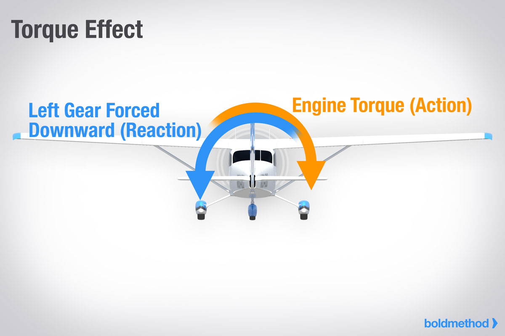

Torque and P-Factor To the pilot, “torque” (the left turning tendency of the airplane) is made up of four elements that cause or produce a twisting or rotating motion around at least one of the airplane’s three axes. These four elements are:

1. Torque reaction from engine and propeller.
Torque reaction involves Newton’s Third Law of Physics—
for every action, there is an equal and opposite reaction. As
applied to the aircraft, this means that as the internal engine
parts and propeller are revolving in one direction, an equal
force is trying to rotate the aircraft in the opposite direction.